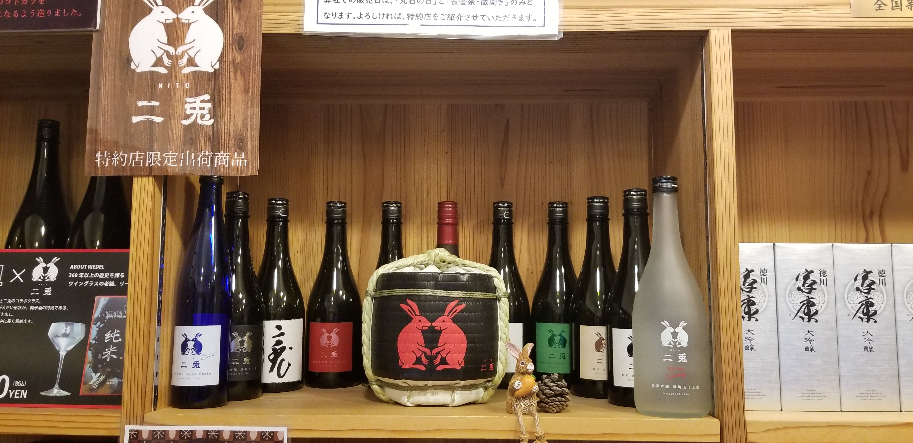

- 北海道
- 青森県
- 岩手県
- 宮城県
- 秋田県
- 山形県
- 福島県
- 茨城県
- 栃木県
- 群馬県
- 埼玉県
- 千葉県
- 東京
- 神奈川県
- 新潟県
- 富山県
- 石川県
- 福井県
- 山梨県
- 長野県
- 岐阜県
- 静岡県
- 愛知県
- 三重県
- 滋賀県
- 京都
- 大阪
- 兵庫県
- 奈良県
- 和歌山県
- 鳥取県
- 島根県
- 岡山県
- 広島県
- 山口県
- 徳島県
- 香川県
- 愛媛県
- 高知県
- 福岡県
- 佐賀県
- 長崎県
- 熊本県
- 大分県
- 宮崎県
- 鹿児島県
- 沖縄県
青森県の日本酒
二兎(ニト)
もし初めての日本酒がこの酒だったとしたら、残念ながら他のお酒を飲んでみるとは思わなかったも知れない。
味、香り、のどごし全てが自分にとって完璧だ。
何でこのお酒の評価が4.9かとしたら、いつかこれを超えるお酒が絶対に現われる期待を込めているから。
特約店出荷品なので蔵に行っても買えない。ネット上か特約店で買う。
死の前に一杯してから行きたいお酒。

岡崎市
山田錦、岡崎地域米
丸石酒造
精米歩合48~70%
アルコール度数15~17%
点数:4.9